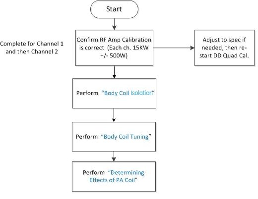
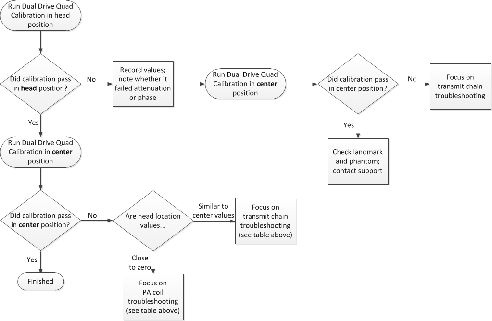
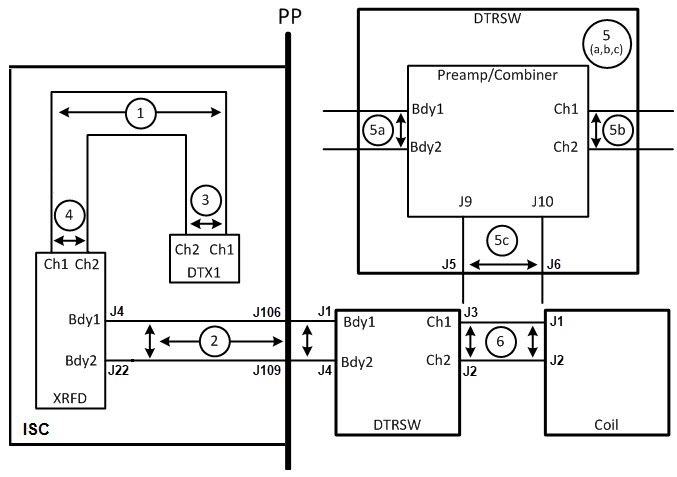
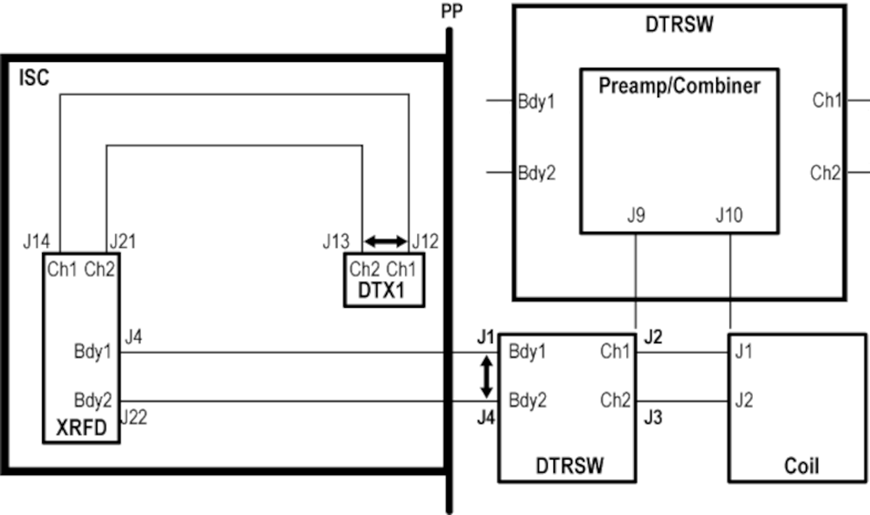
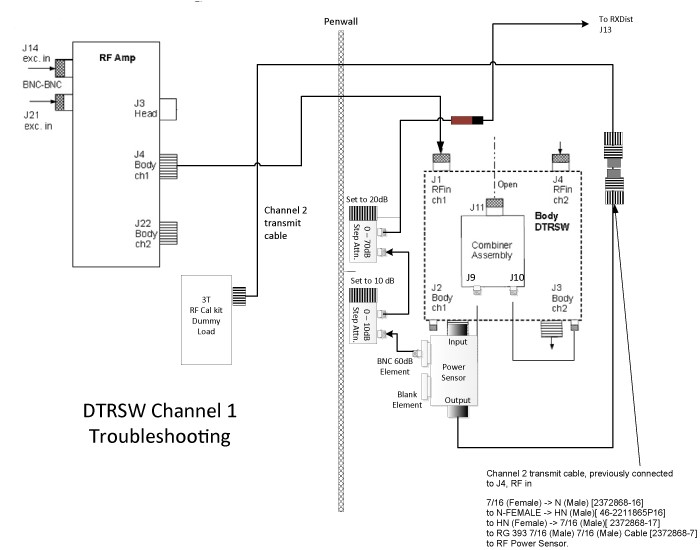
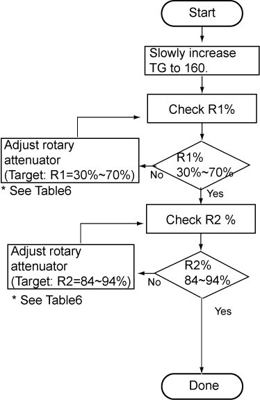
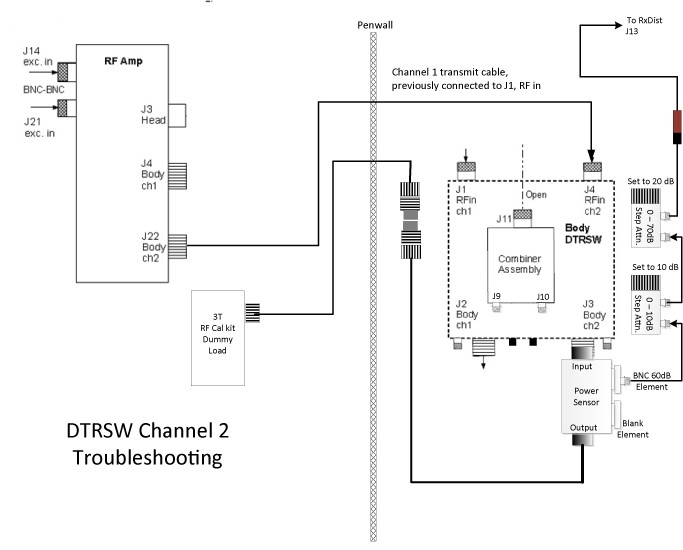

- 00000018WIA304EEE20GYZ
- id_131064674.15
- Apr 28, 2023 2:47:16 PM
Quadrature calibration troubleshooting
Information about dual drives, quadrature calibration tools, and how to troubleshoot calibration failures.
SIGNA Pioneer 3.0T supports a dual drive RF transmit chain, referred to as channel 1 and channel 2. The signals for both channels originate from the exciter and are sent to the dual drive RF amplifier, where they are amplified to a maximum of 15kW per channel for body coil mode only. The RF output riding on the T/R pulse is sent to the dual transmit receive switch (DTRSW) and then to the RF body coil. Because there are two RF signals, this redundancy can be used to troubleshoot the RF output.
For information on running the calibration tool: Dual drive quadrature tool
-
For information on how dual drive works, see Dual Drive Theory
-
For information on troubleshooting the dual drive RF amplifier, see Dual Drive RF Amp Troubleshooting
-
For information on dynamic disable and T/R pulse errors, see T/R and DD Troubleshooting
| Warning | |
|---|---|
| Warning | |
|---|---|
| Warning | |
|---|---|
Go through the table twice–once for head location and once for center location.
| Question/Problem | Possible Causes | Actions |
|---|---|---|
|
Does the tool fail to run? |
|
|
|
Does the tool fail due to low SNR? (See Viewing log file) |
|
|
|
Does the tool fail due to low uniformity? (See Viewing log file) |
|
|
|
Does the tool fail due to high TG? (See Viewing log file) |
|
See Figure 1. |
|
Do the results fail? (not converge) |
|
|


DD Quad Cal failure information
Generic error message
The Dual Drive Quadrature Calibration tool generates the following message when it detects an error that prevents it from executing.

Because the tool reports this generic error message for a variety of reasons, it is important to check the error log when this error message is displayed. Three conditions that can generate this error message are Scan Door Open, No Signal, or Low Signal.
If the Dual Drive Quadrature Calibration tool found a Low Signal condition, the tool generates the following error message in the error log.

The above faults may not be associated with the Quad Cal tool. For example, a poorly calibrated RF amplifier could cause a low signal condition.
Viewing log file
The Dual Drive Quadrature Calibration tool generates a log file. However, there is no GUI viewer for it. To view calibration log files, open a C-shell and type:
>cd /usr/g/service/log/systools/
ls -al QuadCal*
The files are listed. Quadrature calibration file names start with QuadCal and end with .dat, and contain the coil ID for the system’s PA coil.
QuadCal_Y_30T0GEM0E0FLAT0TABLE0P2P3P40xxxx_GEMSsiggjNFhn3pJ6xvsAqJoBQvFU0qb_630000001301a00f.dat
An example log file is below:
Iteration 1
Checking landmark location.
Land mark location from home position 1.100100e+03 mm
Setting up combined image scan... Please wait
TG Window = 53
Channel 1 and Channel 2 set to ON
Auto prescan successful...
Phantom offsets (mm) X:L 8, Y:A 24, Z=I -1
Completed scanning for combined image
Last exam: 53651
Extracting image 1 in Exam 53651 complete
Combined image SNR 136.41, Uniformity 87.26
Combined image SNR 136.41 lesser then required SNR 160.00
Compensation PASS
Difference PASSThe log file provides errors for particular issues. For example:
Combined image SNR 136.41 lesser then required SNR 160.00
indicates that test failed due to low SNR.
Compensation PASS
indicates if channel to channel attenuation passed or failed.
Difference PASS
indicates if channel to channel phase difference passed or failed.
DD Quad Cal failures due to magnitude: low signal on one channel
Swapping the RF transmit or receive cables does not cause hardware damage, but it does create a situation known as reverse quadrature. When this occurs, the combined image has a low signal. To determine if this is the problem, generate the three images using the Dual Drive Quadrature Calibration tool.
The illustration below shows the results of a system that has proper quadrature and the proper signal strength from both Channel 1 and Channel 2.

Values are approximate and may vary if System Gain was not previously executed. The ratio between the combined scan and the single channel scan is approximately 7 : 5. If the value for the combined image is 1400, the value for the single channel scans should be approximately 1000.
| Tools and test equipment | ||
|---|---|---|
| Item | Quantity | Part Number |
| Body TLT Sphere Phantom (Pink Solution) | 1 | 2360025 |
| Body TLT Short Loader | 1 | 2360037 |
| Form Support for ECMT and Phantom | 1 | 5554839 |
-
Place the body TLT sphere and Form Support for ECMT (5554840) on the table.
-
Landmark the phantom and drive it into the magnet bore.
-
Click New Patient to set up for a scan with geservice for user id.
-
Under Protocol, select Service. Then select DDquadrature.
Figure 5. Protocol selector screen 
-
Open a C-shell and type the following command.
ovs
Note: “ovs” is a script to allow performing a scan as DD Quadrature tool. -
Set up and scan the combined image. DO NOT perform Auto Prescan. Perform Manual Prescan and set the values to:
-
TG = 150
-
R1 = 11
-
R2 = 14
-
-
After scanning the combined image, removed the RF input cable from RF amplifier channel 2 by disconnecting J21. Leave channel 1 (J14) connected. Repeat the same scan WITHOUT changing any of the values for TG, R1, or R2. This linear scan uses only channel 1.
-
When the image for channel 1 is complete, reconnect J21 (channel 2 input) and disconnect J14 (channel 1 input). Repeat the same scan WITHOUT changing any of the values for TG, R1, or R2. This linear scan uses only channel 2.
-
Now there are three images. Review them. Figure 4 shows the results for a system that has proper quadrature and the proper signal strength from both channel 1 and channel 2. Use Table 2 to troubleshoot your images.
Table 2. Troubleshooting scan images Scan Result Problem Resolution If the combined image has a weaker signal than either image from the single channels The system could be transmitting in reverse quadrature. Somewhere in the RF transmit chain, the channel 1 and channel 2 cables are swapped. Locate the swapped cables and connect correctly. Cables between DTRSW and the body coil must always be in the correct locations, or the body receive signal will be poor. Swapping channel 1 and channel 2 cables somewhere else in the transmit chain will not restore the body receive signal quality to normal.
If the signal for one of the channel images is significantly lower than the other channel There could be low or no RF signal from one of the channels. Check the RF output using the Power Measurement Kit or using the RF Amp Power Check tool. See Body and Head Maximum Power Setup and Calibration. -
If all the cables and the RF outputs are correct and the source of DD Quadrature Calibration cannot be determined by visual inspection of the images, proceed to Using RFA tool to troubleshoot DD Quadrature Calibration failures.
Phase troubleshooting
This section is designed to help the FE locate the largest contributor of phase shift in the transmit chain. This is done by swapping cables and hardware between the DTX1 exciter and the RF body coil, and checking for a change in phase polarity after every swap. A change in polarity after a cable swap indicates that you have reached one of the cables contributing a majority of the phase shift. Ideally, each channel 1 and 2 transmit chain section should contribute almost no phase shift. In a normal system, swapping channel 1 and 2 cables in any location should not result in any change in phase polarity.
-
Using a normal system configuration, perform quadrature calibration in Test mode and record the initial residual phase value and polarity as result A.
-
Refer to the illustration. Actions are circled numbers, showing where to swap cables.
For each action, swap all cable connections identified with swap symbol <—>. In each action (except action 5) each end of the cable is swapped so that the entire section of cable is relocated to the other transmit line. Action 5, however, only swaps the cable ends connecting to the DTRSW.
Figure 6. Quad calibration phase troubleshooting 
-
Starting with action 1, swap both ends of cables as shown to relocate the entire cable onto the other transmit line.
-
After swapping the cables, repeat quadrature calibration in Test mode for the given action, and record the new initial residual phase value and polarity as result B.
-
Compare the values recorded as result A and result B:
-
If the values are the same, return the cables to the normal positions and repeat the steps above with the next numbered action.
-
If the values are different and this is action 5, stop and replace the DTRSW because it is the source of most of the additional phase.
-
If the values are different and result A is positive, then most of the additional phase is in the channel 2 transmit cable that was swapped. Inspect the cable and confirm that it is the correct cable for the system. Reseat the cable.
-
If the values are different and result A is negative, then most of the additional phase is in the channel 1 transmit cable that was swapped. Inspect the cable and confirm that it is the correct cable for the system. Reseat the cable.
-
If the situation remains unchanged, the only items left are the DTX1 exciter and the body coil. Contact support before continuing.
-
Magnitude troubleshooting
Cable swapping can also be utilized to isolate magnitude issues with dual drive systems. The magnitude change between channels should not vary more than 5 counts when the RF transmit cables are swapped. The following process tests the entire transmit chain from the output of the exciter to the output of the DTRSW. The only cables that are not be tested are the cables that run between the DTRSW and the body coil.
-
Using a normal system configuration, perform quadrature calibration in Test mode and record the initial residual magnitude value and polarity as result A.
-
Swap cables between exciter outputs at J12 and J13 at the exciter, and swap cables between J1 and J4 at the DTRSW.
Figure 7. Magnitude troubleshooting 
-
After swapping the cables, repeat quadrature calibration in Test mode for the given action, and record the new initial residual magnitude value and polarity as result B.
-
Compare the results. If there is a 5 count difference between the two magnitude values, the transmit chain is contributing to the magnitude error.
Using RFA tool to troubleshoot DD Quadrature Calibration failures
The RFA Loopback Test can be used to measure deviations in magnitude and phase for channel 1 and channel 2 anywhere in the transmit chain between the DTX exciter and the DTRSW. It cannot be used to accurately measure magnitude and phase for channel 1 and channel 2 from the RF body coil.
It is recommended that RFA be executed first at the output of the DTRSW. This will determine if an issue is either with the system electronics leading up to the DTRSW or if the issue is with the body coil. If the failure is determined to be before the DTRSW, RFA can be used to isolate the failure location.
| Warning | |
|---|---|
Tools and test equipment
| Tools and test equipment | |||
|---|---|---|---|
| Item | Quantity | Part number | Manufacturer |
| RF Power Measurement Kit | 1 | EITHER: 5307511-2, 5307511-3, 5307511-4, or 5307511-5 (Bird wattmeter) OR, BOTH: 5434817 (Agilent wattmeter) and 5434817-20 (Dummy Load) | |
| Universal SST Kit (1.5T and 3.0T) | 1 | 5110731-4 | - |
| 70 dB, with 10 dB Step, 50Ω Rotary Attenuator [from 3.0T Grafidy Kit, (2386042)] | 1 | 46-255838P2 | - |
Procedure for running RFA at output of DTRSW
Setup for channel 1
-
Before running RFA, zero out any residual values in the DD Quadrature tool as follows:
-
In the Common Service Desktop, select Calibration then select DD Quadrature Calibration.
-
Select Reset.
-
Select Defaults ( 0,0 ).
-
Exit the DD Quadrature tool.
-
-
Ensure that the system is idle, and remove all portable coils from the bore.
-
Place the body TLT sphere and Form Support for ECMT (5554840) on the center of cradle.
-
Landmark the phantom.
-
Perform the following steps.
-
On the front of the driver module, disable the TR and DD fault detection. Set SW2 to TR DISABLE (down) and set SW3 to DD DISABLE (down).
-
On the Exciter/Ref Clock module located in the ISC, set the RF Enb switch to Disable(down).
Figure 8. Setting TR and DD disable 
-
-
To gather data from channel 1, set up the test configuration using the diagram and steps below.
Figure 9. DTRSW troubleshooting for channel 1 
Click to download a higher resolution PDF of DTRSW Troubleshooting for Channel 1.
-
Disconnect the Ch2 transmit cable from the RF amplifier at J22. Connect the cable from J22 to the 3T 15kW (50Ω) dummy load.
-
Remove Ch1 RF output cable to body coil from the DTRSW at J2. Leave the cable disconnected.
-
Place a 60dB BNC element, labeled 2372868-22, into the Forward port of the 5010G RF power sensor. Install a metal element blank or any other sense element into the open port labeled Reflected on the power sensor. The Reflected port is not measured, so the type of element used to fill this port is not critical.
-
Connect the power sensor to J2 of the DTRSW.
-
Install two adjustable attenuators in series with the 60dB element in the RF power sensor. Set up the attenuators. Set the 1dB step attenuator to 4db, and the 10dB step attenuator to 20dB. Total additional attenuation provided by the step attenuators should be 30dB.
-
Remove the body receive cable from the preamp combiner at J11. Connect a DC block at the end of this cable and connect the other end of the DC block to the step attenuator.
-
Disconnect the Ch2 RF transmit to body coil cable at J3 of the DTRSW. Leave the cable disconnected.
-
Remove the Ch2 RF transmit cable at J4 of the DTRSW. Connect this end to the output side of the RF power sensor using the RF cable from the SST kit and the two RF connectors from the RF power measurement kit.
Table 3. Required connectors and cables Part Name Part Number Kit Name RF Connector, 7/16 (Female) -> N (Male) 2372868-16 3T RF Power Measurement Kit RF Connector, N-FEMALE -> HN (Male) 46-2211865P16 SST Kit RF Connector, HN (Female) -> 7/16 (Male) 2372868-17 3T RF Power Measurement Kit -
Disconnect the input cables to the preamp combiner at J9 and J10.
-
Disconnect J7 and J8 at DTRSW.
-
Disconnect J21 cable at the RF amplifier.
Data analysis
| Notice | |
|---|---|
-
On the Exciter/Ref Clock module located in the ISC, set the RF Enb switch to Enable (UP).
-
Insert the service key into the PC.
-
From the Common Service Desktop, select the [Image Quality] tab, and then select [RFA].
-
Set Loopback Mode to Body Dummy, RF Pulse Type to Ascending, Dual Drive Output to Ch1 output only looped back and Disable Ch2 exciter output.
-
For channel 1, set Dual Drive Output to Ch1 output only looped back and Disable Ch2 exciter output.
-
For channel 2, set Dual Drive Output to Ch2 output only looped back and Disable Ch1 exciter output.
Figure 10. RF analysis tool menu 
-
-
Click Start.
Note: SVAT errors usually indicate a setup problem such as landmark, 32-channel patient table connector not connected, TR or DD fault, etc. Check the error log. -
Check the loopback setup according to the pop-up request. Click Continue and then click Yes.
-
After 60 seconds, a message box appears. Do NOT respond to the message box at this point. Click the Patient icon in the upper right of the display.
Figure 11. Patient icon 
-
Adjust the output according the following steps.
Note: Initial value: R1=11, R2=30. Do not change R1 value in output adjustment.Note: When using RFA to troubleshoot DD Quad Cal issues, the transmit gain (TG) should be set to 160 for both channels because this is the nominal prescan value.Note: Do NOT change the attenuator settings for channel 2. The attenuator settings must be the same for both channels.-
Slowly increase TG to 200.
-
Check R1% value.
-
If R1 is within 30%~70%, go to step c.
-
If R1 is out of 30%~70%, adjust rotary attenuator until R1 value becomes 30%~70%.
-
-
Check R2% value.
-
If R2 is within 84%~94%, adjustment is done. go to step 9.
-
If R2% is out of 84%~94%, adjust the rotary attenuator as close to 84%~94%. If R2 % becomes 84%~94%, adjustment is done.
Figure 12. Power output adjustment 
Table 4. Attenuator change and R1%, R2% change ratio ATT R1%, R2% Change Ratio 3 x 0.71 2 x 0.79 1 x 0.89 -1 x 1.12 -2 x 1.26 -3 x 1.41 -
-
-
When done, click the Toolbelt icon to return to service window. Start the scan by selecting [Proceed & auto-scan].
Figure 13. Message box 
-
After the scan and analysis ends, view the results. Compare the results to the typical normal plots shown in Figure 14.
Real failures exceed the example plot values by 2 or more times. Minor differences are not failures. Select the popup choice to erase the displays. The plots are saved as JPG files under /usr/g/service/cclass/RFA/.
Figure 14. Sample RFA plot results 
-
From the RFA Intra-Pulse Phase Linearity Plot Analysis 1, record the Topavg (magnitude) value and the Avg Phase deg (Phase) values for channel 1. You may need to re-size to view values. Use Table 5 to record these values.
Note: If the plots are closed, they can be re-opened. Go to directory /usr/g/service/cclass/RFA and open file with the suffix phafit.jpg.For example: [display P28160.7.RFA.bodydummy.2.phafit.jpg].
Setup for channel 2
-
On the Exciter/Ref Clock module located in the ISC, set the RF Enb switch down (Disable).
-
To gather data from Channel 2, set up the test configuration using the diagram and steps in the following illustration.
Figure 15. DTRSW troubleshooting to channel 2 
Click to download a higher resolution PDF of DTRSW Troubleshooting for Channel 2.
-
Reconnect Ch2 Transmit cable at RF Amplifier (J22).
-
Disconnect Ch1 Transmit cable from the RF Amplifier at J4. Connect the cable removed from J4 to the 3T 15kW (50Ω) dummy load.
-
Remove the Ch2 RF Output Cable to Body Coil from the DTRSW at J3. Leave the cable disconnected.
-
Move the RF Power Sensor Input currently connected to J2 to J3.
-
Leave variable attenuators set in the same values as Channel 1.
-
Remove the Body Receive Cable from the Pre-Amp Combiner at J11. Connect a DC Block at the end of this cable and connect the other end of the DC Block to the Step Attenuator.
-
Remove the Ch1 RF Transmit cable at J1 of the DTRSW. Connect this end of the cable to the output side of the RF Power Sensor using the RF Cable from the SST Kit and several RF Connectors from the RF Power Measurement Kit.
-
Disconnect J14 at the input of the RF Amp.
-
On the Exciter/Ref Clock module, set the RF Enb switch to up (Enable).
-
Repeat the steps in Data analysis, only changing the following in the RFA menu (see Figure 10); the Select Loopback mode of [Body Dummy], RF Pulse Type of [Ascending], Dual Drive output of [Ch2 output only looped back], and [Disable Ch1 exciter output].
-
After the scan is complete, reconnect J14 at the RF Amplifier.
-
From the RFA Intra-Pulse Phase Linearity Plot Analysis 1, record the Topavg (or magnitude) value and the Avg Phase deg (or Phase) values for Channel 2. You may need to re-size to view valves. Use Table 5 to record these values.
Note: If the plots are closed, they can be re-opened as they are stored as JPEG files. Go to directory /usr/g/service/cclass/RFA and open file with the suffix phafit.jpg.Example: [display P28160.7.RFA.bodydummy.2.phafit.jpg].
Calculate db difference
| Channel 1 | Channel 2 | |
| Topavg | ||
| Avg Phase deg |
-
Calculate the db difference using the following formula:

There are no hard specifications at this time. However, if the MagBal delta is greater than 0.5 db (either positive or negative), there could be an issue with the system electronics. Check RF output (see Body and Head Maximum Power Setup and Calibration). It is also recommended to run RFA at the output of the RF Amplifier and the Exciter to isolate cause of high MagBal.
However, if the MagBal delta is less than 0.5 db, there could be an issue with the Body Coil Tuning. See Check body coil tuning with network analyzer.
Note: If the plots are closed, they can be re-opened as they are stored as JPEG files. Go to directory /usr/g/service/cclass/RFA and open file with the suffix phafit.jpg.Example: [display P28160.7.RFA.bodydummy.2.phafit.jpg].
Note: When setting the variable attenuators for this test, do not change the settings. Channel 1 and Channel 2 must be set at the same attenuation values for this test.There are no hard specifications at this time. However, if the phase difference between Channel 1 and Channel 2 is greater than 90 degrees, ±15 degrees (or 75 to 105 degrees), there could be an issue with the system electronics. It is recommended to run RFA at the output of the RF Amplifier and the Exciter to isolate the cause of the phase issue.
Note: In the RFA results, Channel 1 should lead Channel 2. The phase of Channel 1 should be +90 degrees relative to the phase of Channel 2.For example, if the phase for Channel 1 is 110.0 degrees and the phase for Channel 2 is –160.0 degrees, the actual phase difference is 90 degrees.Figure 16. Polar chart 
-
If both the magnitude and phase results for the DTRSW output are acceptable, the problem is possibly in part of RF chain that is not included in RFA test loop, such as the RF body coil.
Finalization for RFA check
-
Return the system to the normal operating configuration.
-
Re-run the calibration tool: Dual drive quadrature tool.
Check body coil tuning with network analyzer
If the RF transmission from Channel 1 and Channel 2 are good, perform Body Coil Tuning to check and/or adjust the tuning on the body coil.
Determining effects of PA coil
The PA coil can affect the results of DD Quadrature Calibration. Both the magnitude and the phase can change when the PA coil is in the magnet bore (compared to being out of the magnet bore). Remove the PA coil, replace with Dual Drive Quadrature Tool, and repeat the Quad Cal checks with the cradle and associated cable track in bore, but without the actual PA coil.
-
Remove the PA coil, replace with PA filler (or new PA Coil ordered as FRU). Refer to TDI Posterior Array Coil Replacement .
Note: If there is no PA filler at site, order PA filler or PA coil to proceed this step. -
Perform Dual drive quadrature tool.
-
(For PA Filler) Compare the results of DD Quadrature Calibration when the PA coil is in the bore with the results when the PA coil is out of the bore. If the difference of attenuation at the center between the PA coil in bore and out of bore is more than 20 counts, PA coil may need to be replaced.
Note: (For PA Coil) If PA Coil is replaced instead of PA filler, confirm that the result is within the specification. -
Otherwise, performUsing RFA tool to troubleshoot DD Quadrature Calibration failures.